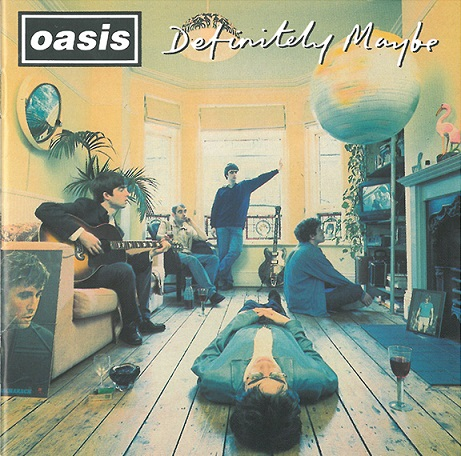
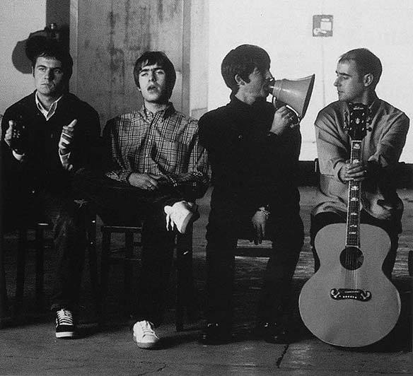
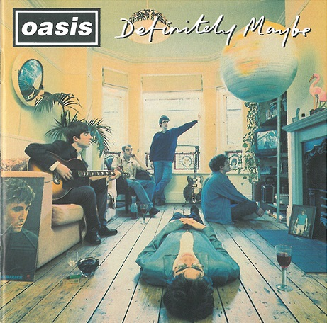
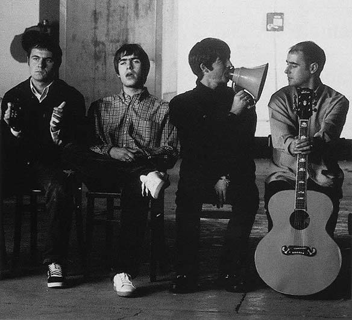

Oasis foi uma banda inglesa de rock formada no ano de 1991, na cidade de Manchester. Até a sua extinção em 2009, era composta por Liam Gallagher (vocal e pandeireta), Noel Gallagher (guitarra e backing vocal), Gem Archer (guitarra e teclado), Andy Bell (baixo e teclado) e Chris Sharrock (bateria e percussão). Seu estilo musical consistia basicamente do rock com ênfase no alternativo e elementos do gênero da música pop, como o britpop. Em sua existência, ocorreram várias mudanças em sua formação: originalmente era composta por Liam, Paul "Bonehead" Arthurs (guitarra), Paul "Guigsy" McGuigan (baixo), Tony McCarroll (bateria) e por último, Noel, sendo convidado a se juntar como o quinto membro, formando o núcleo musical.
𝙋𝙧𝙞𝙣𝙘𝙞𝙥𝙖𝙞𝙨 𝙖𝙡𝙗𝙪𝙣𝙨
𝘿𝙚𝙛𝙞𝙣𝙞𝙩𝙚𝙡𝙮 𝙈𝙖𝙮𝙗𝙚:

O primeiro album do Oasis foi lançado em 29 de agosto de 1994, pela Creation Records. Foi um sucesso comercial e de crítico imediato. O álbum vendeu mais de 15 milhões de cópias em todo o mundo e foi aclamado pela crítica.[4] Foi direto para o topo do ranking na UK Albums Chart, tornando-se o álbum de estreia mais vendido no Reino Unido naquela época; ganhou a certificação de 8x platina pelo British Phonographic Industry (BPI) — mais de 2,4 milhões de unidades vendidas. Também fez sucesso nos Estados Unidos, ganhando disco de platina. Todas as músicas do album foram escritas por Noel Gallagher, sendo elas "Rock 'N' roll star", "Shakermaker", "Live Forever", "Up in the Sky", "Columbia", "Supersonic", "Bring It on Down", "Cigarettes and Alcohol", "Digsy's Dinner", "Slide Away", "Married With Children".
(𝙒𝙝𝙖𝙩'𝙨 𝙩𝙝𝙚 𝙎𝙩𝙤𝙧𝙮) 𝙈𝙤𝙧𝙣𝙞𝙣𝙜 𝙂𝙡𝙤𝙧𝙮?:
_Morning_Glory_.jpg)
(What's the Story) Morning Glory? é o segundo álbum de estúdio da banda de rock britânica Oasis. Lançado em 2 de outubro de 1995, foi produzido por Owen Morris e por Noel Gallagher através da gravadora Creation Records. A estrutura e o estilo de arranjo do álbum foi uma mudança significativa em relação ao álbum anterior, Definitely Maybe (1994). As composições de Noel eram mais focadas em baladas e colocavam mais ênfase em refrões "enormes", com os arranjos de cordas e instrumentação mais variada contrastando com a inexperiência do álbum de estreia do grupo. Morning Glory foi o primeiro álbum com o baterista Alan White, substituindo Tony McCarroll — embora McCarroll ainda aparecesse durante a performance de uma canção. Todas as músicas do album foram escritas por Noel Gallagher, sendo elas "Hello", "Roll with It", "Wonderwall", "Don't Look Back in Anger", "Hey Now!", "The Swamp Song, Excerpt 1", "Some Might Say", "Cast no Shadow", "She's Electric", "Morning Glory", "The Swamp Song, Excerpt 2", "Champagne Supernova".
𝘾𝙪𝙧𝙞𝙤𝙨𝙞𝙙𝙖𝙙𝙚𝙨 𝙙𝙖 𝙗𝙖𝙣𝙙𝙖:

Antes de formar o Oasis, Liam Gallagher cobrava do irmão que formasse uma banda juntos, chamada The Gallaghers Brothers;
Noel escreveu 'Wonderwall' e 'Don't Look Back in Anger' e então questionou Liam sobre qual das duas músicas ele gostaria de cantar, então Liam escolheu 'Wonderwall';
Na adolescência, Noel Gallagher roubou uma loja com a ajuda de um amigo. Na época, o jovem era bem conhecido e acabou sendo facilmente reconhecido, o que acabou levando-o para a cadeia por seis meses;
Meg e Patsy, ex-esposas de Noel e Liam são as autoras do backing vocal da canção 'All Around The World'. Em uma entrevista, o produtor do disco afirmou que os irmãos acharam que seria legal ver suas esposas juntas, cantando na canção, pois é como se fosse uma grande família trabalhando junta;
Entre as versões sobre a escolha do nome Oasis, está a lenda de que Liam teria visto a palavra escrita em um pôster em seu quarto e que ele teria escolhido este nome por causa de um clube chamado The Swindon Oasis. Apesar das histórias, a banda nunca revelou o porquê de terem escolhido Oasis como nome;
Noel é um grande fã dos Beatles e vários trabalhos da banda e capas de discos ganharam referências à banda britânica. Em 'Be Here Now', há uma placa que foi retirada de um álbum dos Beatles, na capa de ‘Live Forever’, Noel decidiu colocar uma imagem da casa em John Lennon morou além de que no clipe ‘All Around The World’ surgiu um disco voador amarelo, baseado no submarino amarelo que aparece em um dos álbuns dos Beatles.
𝘿𝙚𝙛𝙞𝙣𝙞𝙩𝙚𝙡𝙮 𝙈𝙖𝙮𝙗𝙚:

O primeiro album do Oasis foi lançado em 29 de agosto de 1994, pela Creation Records. Foi um sucesso comercial e de crítico imediato. O álbum vendeu mais de 15 milhões de cópias em todo o mundo e foi aclamado pela crítica.[4] Foi direto para o topo do ranking na UK Albums Chart, tornando-se o álbum de estreia mais vendido no Reino Unido naquela época; ganhou a certificação de 8x platina pelo British Phonographic Industry (BPI) — mais de 2,4 milhões de unidades vendidas. Também fez sucesso nos Estados Unidos, ganhando disco de platina. Todas as músicas do album foram escritas por Noel Gallagher, sendo elas "Rock 'N' roll star", "Shakermaker", "Live Forever", "Up in the Sky", "Columbia", "Supersonic", "Bring It on Down", "Cigarettes and Alcohol", "Digsy's Dinner", "Slide Away", "Married With Children".
(𝙒𝙝𝙖𝙩'𝙨 𝙩𝙝𝙚 𝙎𝙩𝙤𝙧𝙮) 𝙈𝙤𝙧𝙣𝙞𝙣𝙜 𝙂𝙡𝙤𝙧𝙮?:
(What's the Story) Morning Glory? é o segundo álbum de estúdio da banda de rock britânica Oasis. Lançado em 2 de outubro de 1995, foi produzido por Owen Morris e por Noel Gallagher através da gravadora Creation Records. A estrutura e o estilo de arranjo do álbum foi uma mudança significativa em relação ao álbum anterior, Definitely Maybe (1994). As composições de Noel eram mais focadas em baladas e colocavam mais ênfase em refrões "enormes", com os arranjos de cordas e instrumentação mais variada contrastando com a inexperiência do álbum de estreia do grupo. Morning Glory foi o primeiro álbum com o baterista Alan White, substituindo Tony McCarroll — embora McCarroll ainda aparecesse durante a performance de uma canção. Todas as músicas do album foram escritas por Noel Gallagher, sendo elas "Hello", "Roll with It", "Wonderwall", "Don't Look Back in Anger", "Hey Now!", "The Swamp Song, Excerpt 1", "Some Might Say", "Cast no Shadow", "She's Electric", "Morning Glory", "The Swamp Song, Excerpt 2", "Champagne Supernova".
𝘾𝙪𝙧𝙞𝙤𝙨𝙞𝙙𝙖𝙙𝙚𝙨 𝙙𝙖 𝙗𝙖𝙣𝙙𝙖:

Antes de formar o Oasis, Liam Gallagher cobrava do irmão que formasse uma banda juntos, chamada The Gallaghers Brothers;
Noel escreveu 'Wonderwall' e 'Don't Look Back in Anger' e então questionou Liam sobre qual das duas músicas ele gostaria de cantar, então Liam escolheu 'Wonderwall';
Na adolescência, Noel Gallagher roubou uma loja com a ajuda de um amigo. Na época, o jovem era bem conhecido e acabou sendo facilmente reconhecido, o que acabou levando-o para a cadeia por seis meses;
Meg e Patsy, ex-esposas de Noel e Liam são as autoras do backing vocal da canção 'All Around The World'. Em uma entrevista, o produtor do disco afirmou que os irmãos acharam que seria legal ver suas esposas juntas, cantando na canção, pois é como se fosse uma grande família trabalhando junta;
Entre as versões sobre a escolha do nome Oasis, está a lenda de que Liam teria visto a palavra escrita em um pôster em seu quarto e que ele teria escolhido este nome por causa de um clube chamado The Swindon Oasis. Apesar das histórias, a banda nunca revelou o porquê de terem escolhido Oasis como nome;
Noel é um grande fã dos Beatles e vários trabalhos da banda e capas de discos ganharam referências à banda britânica. Em 'Be Here Now', há uma placa que foi retirada de um álbum dos Beatles, na capa de ‘Live Forever’, Noel decidiu colocar uma imagem da casa em John Lennon morou além de que no clipe ‘All Around The World’ surgiu um disco voador amarelo, baseado no submarino amarelo que aparece em um dos álbuns dos Beatles.